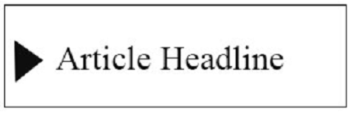
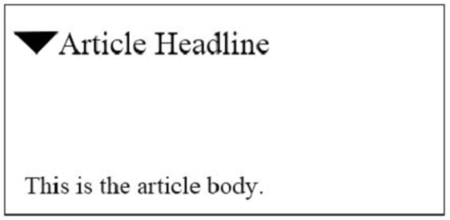

You are creating an HTML document that displays a list of news articles. The list has the following requirements:
For browsers that support the feature, the content must be hidden until the user clicks to reveal it. The following shows how the article displays when the article content is hidden:
The following shows how the article displays when the article content is displayed:
You need to create the markup for an article. How should you complete the markup? To answer, select the appropriate markup segments in the answer area.